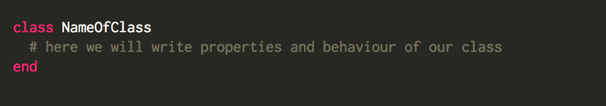
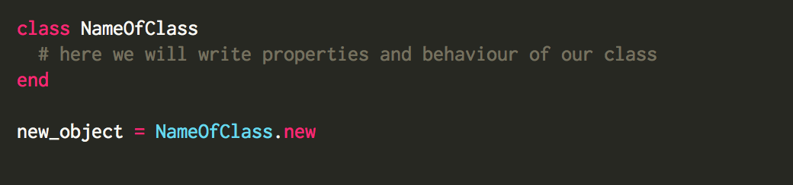
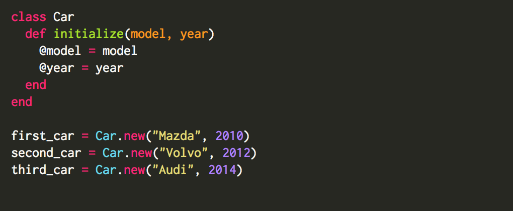

Ruby is an Object Oriented programming language. An object-oriented program involves classes and objects. Class is a blueprint, the blueprint tells Ruby how class should be structured and what it should do. We are working usually with strings, arrays, hashes, in Ruby we call these things classes. In Ruby everything is an Object. When we instantiate a new instance of a class my_name = NewClass.new(“Iulia”) this thing my_name is called Object. Every object is an instance of a class.
Let’s take a car to see how it works in a real world. Prototype of a car - is a class. In prototype I mean that every car has 4 wheels, steering wheel, transmission. When we are creating a new object, we take class as an example, we take properties of a car from our class, and create a new car, that may have another color, another size and etc. new_car = Car(“Audi”).
It is very easy to create a new class, we will use just 3 words:

When we call this class using method “new”, it means we are creating a new object:

Inside of our class we can write methods. Writing methods is very powerful, because they apply only to the individual instance that we are working on. The initialize method is a special type of method. In order to start using your object, it must first be initialized what means that it has any instance variables that needs initializing. Let’s take our Car class as an example:

Now we will write a class with different methods inside of it. For this example we will take a bank account. Bank account is responsible for all data of a person that has this bank account. It could be person’s first name, last name, transactions that he has made, and the balance.

Looks complicated from first sight? Ok, let’s take a look at it step by step.
1)We are creating a class BankAccount. Naming class we have to write a capital letter first, and if we have 2 words in class name, we capitalize second word too (Bank or BankAccount). It is not necessary to capitalize second word, but it is how most Ruby programmers do.
2)We create initialize method, what is called when we instantiate our class. We take first and last name of the person as attributes of this method. And we are creating instance variables inside as well.
3)So what are instance variables? Instance variable - are variables that are available across different methods inside our class. We create this variable starting with “@” sign followed by the variable name (@variable).
4)Then we create new method called “transaction” because we want to show the person what transactions were made to his bank account. As arguments we take amount and location where this transaction was made.
5)New method earn_money keeps information of amount of money that was transferred to your account, and were did they come from.
6)New method spend money keeps information of spent amount of money (that’s why we use “-” sign before the amount word), and place where did you spend your money.
7)Every person wants to know how much money left on his bank account, so we create a method called “your_balance”, where we iterate through our transactions, since this variable is an array. And we add or deduct amount that was earned or spent, and return balance to the screen.
8)We want to have something like a summary, to show person’s name and his balance on the screen, so that’s why we created method “print_out_info”.
9)After we close our class with “end” word, we want to call this class creating an object bank_account. As arguments I took my first and last names. Then when we call earn_money method “bank_account.earn_money(500, "Work place”)” we will see amount added to our bank account, and where did money come from at this example we add a paycheck from your Work place with amount of 500 dollars.Then we call “spend_money” method “bank_account.spend_money(100, "Trader Joe’s”)” and we see how much money I spent, and where I spent them. Then we display balance on the bank account “bank_account.your_balance” and we print this information to the screen calling “print_out_info” method.
=> "Name: Iulia Soimaru, your balance is: 400"
All in all class is like a constructor that builds object. An object built by a specific class is called an instance of this class. Our object bank_account can’t do very much, but instances of classes like Array, String or Hash can do a lot :)
Finally I finished this blog post. Honestly it wasn’t easy to write all of this!

Thank you for attention
Best,
Iulia